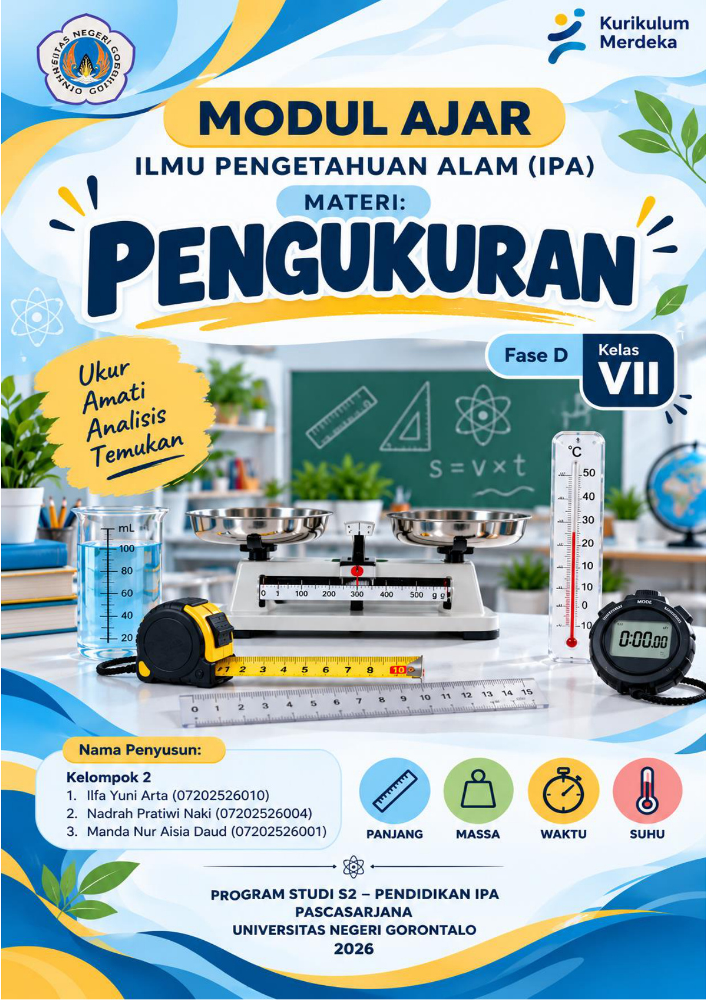

Petualangan Pengukuran
Halo, Siswa! 👋
Pilih misi petualangan sainsmu hari ini:
Bahan Ajar
Presentasi interaktif besaran pokok & satuan SI.
Lab Virtual
Simulasi geser jangka sorong, neraca pegas, & bandul.
Kuis HOTS
10 Soal evaluasi penalaran & pembahasan interaktif.
Video Praktikum
Video panduan praktikum pengukuran waktu.
Panduan Alat
Petunjuk penggunaan OLabs & PhET Pendulum.
Modul Ajar
Capaian TP, sintaks Discovery Learning & PDF.
Akses Portal Resmi OLabs India (olabs.edu.in)
Server resmi OLabs menerapkan kebijakan keamanan X-Frame-Options: SAMEORIGIN. Pada web hosting biasa, klik tombol di bawah untuk membuka simulator resmi utuh di jendela interaktif baru atau gunakan simulator In-App di atas yang tersemat 100%:
Simulasi laboratorium resmi OLabs. Jika web browser atau hosting membatasi frame langsung, klik tombol "Buka Jendela Interaktif OLabs" untuk membuka simulator utuh, atau beralih ke tab "Simulasi Canvas Interaktif" di atas yang 100% offline dan terintegrasi otomatis dengan LKPD Digital!
Hasil Pembacaan Alat:
Tantangan Tebak Skala:
Simulasi interaktif langsung di peramban tanpa koneksi internet. Mengukur diameter luar, dalam, dan kedalaman objek lengkap dengan pembesar skala nonius berimpit dan pencatatan LKPD otomatis.
Simulasi berjalan langsung di dalam aplikasi! Ukur massa beban (50g, 100g, 250g), konstanta pegas k, osilasi gaya berat, dan gravitasi planet secara interaktif. Untuk modul OLabs Helical Spring, ketuk tombol "Buka OLabs Helical Spring".
Gantungkan Benda Uji:
Uji Hitung Massa Benda:
Simulasi berjalan mandiri secara offline! Mengukur gaya berat dan massa beban pada variasi gravitasi (Bumi, Bulan, Mars, Jupiter) serta pencatatan otomatis ke LKPD.
Simulasi berjalan langsung di dalam aplikasi! Atur panjang tali, massa bandul, aktifkan stopwatch, dan hitung 10 ayunan.
📋 Lembar Kerja Praktikum (LKPD) Digital
Tercatat otomatis dari hasil percobaan Jangka Sorong, Neraca Pegas, & Bandul PhET.
📏 Tabel 1: Praktikum Jangka Sorong (Pengukuran Panjang)
| No | Objek Uji | Dimensi | Skala Utama (SU) | Skala Nonius (SN) | Hasil Akhir (SU + SN×0,01) | Aksi |
|---|
⚖️ Tabel 2: Praktikum Neraca Pegas (Pengukuran Massa & Gaya Berat)
| No | Objek Uji | Gaya Berat w (N) | Gravitasi g (N/kg) | Rumus Hitung | Massa Terhitung (g) | Aksi |
|---|
⏱️ Tabel 3: Praktikum Bandul (Pengukuran Waktu & Periode)
| No | Nama Percobaan | Panjang Tali (L) | Massa (m) | Waktu 10 Ayunan (t) | Periode Percobaan (T=t/n) | Periode Teoretis | Aksi |
|---|
Sangat Baik (Lulus)
Ulasan & Pembahasan Kunci Jawaban Lengkap
Pelajari pembahasan setiap butir soal untuk memperdalam pemahaman konsep sainsmu:
⏱️ Panduan Praktikum Pengukuran Waktu & Periode:
- 1 Ayunan Penuh: Gerak bolak-balik mulai dari simpangan awal kembali ke titik semula (A ➔ B ➔ C ➔ B ➔ A).
- Pengukuran Waktu: Catat waktu untuk 10 kali ayunan penuh menggunakan stopwatch secara akurat.
- Perhitungan Periode (T): Dihitung dengan rumus
T = t / n(waktu total dibagi 10 ayunan). - Kesimpulan Penting: Periode ayunan dipengaruhi oleh panjang tali, dan TIDAK dipengaruhi oleh massa beban bandul!
📏 Panduan Praktikum Pengukuran Panjang (Jangka Sorong):
- Skala Utama (SU): Baca nilai pada batang tetap sebelum angka 0 skala nonius dalam satuan cm (misal: 2,3 cm).
- Skala Nonius (SN): Cari garis nonius yang berimpit tegak lurus dengan garis skala utama (misal: garis ke-4).
- Rumus Pengukuran:
Hasil = SU + (SN × 0,01 cm). - Contoh Pembacaan: 2,3 cm + (4 × 0,01 cm) = 2,34 cm.
⚖️ Panduan Praktikum Pengukuran Massa (Neraca Pegas):
- Penyesuaian Titik Nol: Pastikan jarum penunjuk tepat pada garis 0 Newton sebelum diberi beban (zero error correction).
- Pembacaan Gaya Berat (w): Gantung beban di kait neraca dan catat nilai gaya tarik dalam satuan Newton (N).
- Perhitungan Massa (M): Hitung massa dengan rumus
M = w / g(dengan percepatan gravitasi g = 9,8 m/s²). - Contoh: Jika w = 2,45 N pada g = 9,8 m/s², maka massa benda M = 0,25 kg (250 gram).

Ringkasan Struktur Modul Ajar (Kurikulum Merdeka)
Fase D • Kelas VII SMP • Model: Discovery Learning
Peserta didik mampu mengukur besaran panjang, massa, dan waktu menggunakan alat ukur baku serta terintegrasi simulasi laboratorium virtual secara presisi.
1. Pemberian Rangsangan (Stimulasi) ➔ 2. Pernyataan Masalah ➔ 3. Pengumpulan Data (Lab Virtual) ➔ 4. Pengolahan Data (LKPD) ➔ 5. Pembuktian ➔ 6. Menarik Kesimpulan.
Bernalar Kritis (menganalisis hasil pengukuran), Mandiri (mengoperasikan simulasi), dan Gotong Royong (diskusi kelompok praktikum).